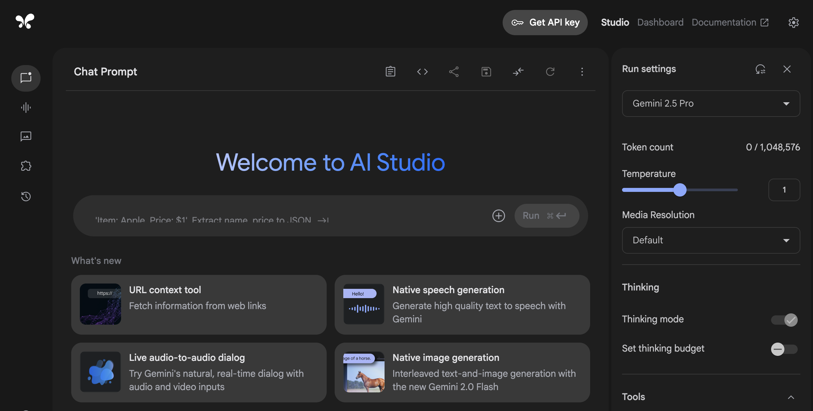
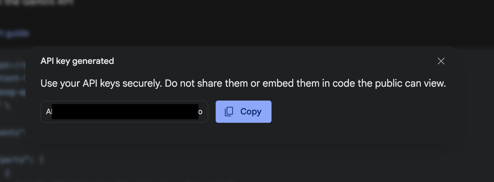
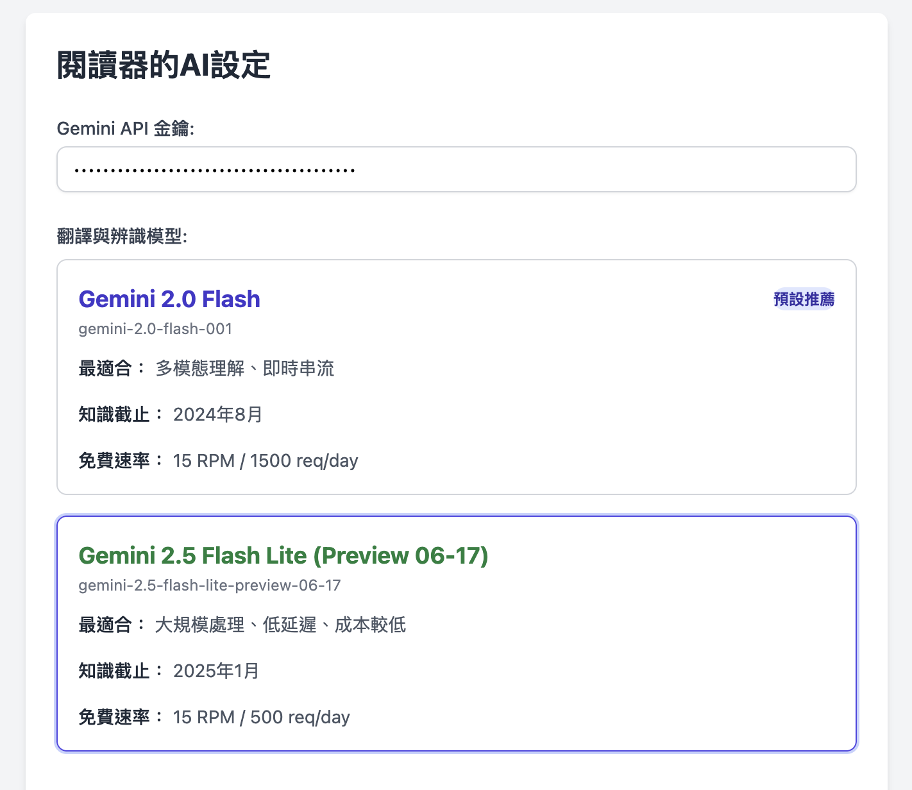

前言
「風颱翻譯工作台」透過串接 Google 的 Gemini AI 模型來提供強大的翻譯與辨識功能。為了確保您的資料安全與隱私，本工具需要您使用自己的 API 金鑰。以下將引導您完成免費申請流程。
1
前往 Google AI Studio
首先，請點擊下方按鈕，開啟 Google AI Studio 官方網站。這是 Google 提供給開發者測試與獲取 Gemini API 的平台。
前往 Google AI Studio 2
取得 API 金鑰
登入您的 Google 帳號後，點擊頁面左側選單的「Get API key」按鈕。接著，在主畫面點擊藍色的「+ Create API key」按鈕。
3
建立並複製您的金鑰
在跳出的視窗中，系統會引導您為這個金鑰建立一個新的 Google Cloud 專案 (您通常只需點擊同意即可)。完成後，點擊「Create API key」。
畫面會顯示一組由許多英文字母和數字組成的字串，這就是您的 API 金鑰。請點擊旁邊的複製圖示，將它完整複製下來。
4
貼到擴充功能設定中
回到 Chrome 瀏覽器，在「風颱翻譯工作台」的「⚙️ 設定」頁面，將剛剛複製的金鑰貼到「Gemini API 金鑰」欄位中，並點擊「儲存設定」。
恭喜您！至此已完成所有設定，可以開始使用擴充功能的所有 AI 服務了。
重要安全性提醒
您的 API 金鑰就如同您家裡的鑰匙，**請絕對不要**將它分享給任何人，或張貼在任何公開的網站（如 GitHub、論壇）上，以免被盜用並產生非預期的費用。